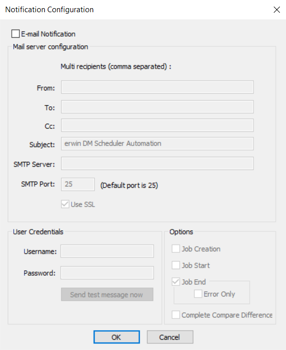

Setting up Email Notifications
To set up email notifications, do the following:
- On the ribbon, in the Settings group, click Email Notification.
The Notification Configuration dialog box opens.

- Select the E-mail Notification check box.
The fields on the dialog box are enabled.Before you configure and send email notifications, ensure that the SendMail.ps1 file is available in the Config folder at C:\Program Files\erwin\Data Modeler r9\.
- In the Mail Server Configuration section, work on the following:
- From: Add an email address. Emails are sent to the user from the mentioned email address.
- To and CC: Add an email address or a list of comma-separated email addresses.
- Subject: Enter a notification subject. By default, it is set to erwin DM Scheduler Automation.
- SMTP Server: Enter your SMTP server name in the mail.domain.com format. Notification emails are sent from this server.
- SMTP Port: Enter the port number of your SMTP server. The default port number is 25. If your organization uses an alternate port number for the mail server, enter the port number.
- Use SSL: Specify whether you want to connect to the server through a secured connection. This check box is enabled only if you have configured SSL on your web server.
- In the User Credentials section, work on the following:
- Username: Enter the username or email address of the account that you want to use to send notifications. Ensure that this account has the rights to send emails in a batch.
- Password: Enter the password of your account.
- Send test message now: Click Send test message now to verify the settings that you made.
- In the Options section, select the event that triggers an email notification. You can send notifications on job creation, job start, job end, job end due to an error, and the difference generated during complete compare.
- Click OK.